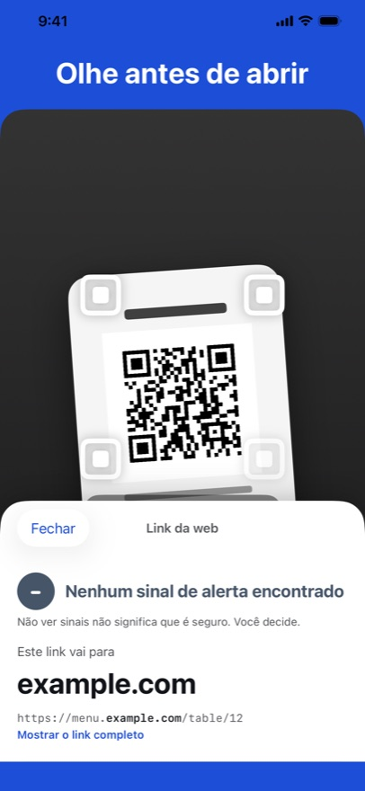
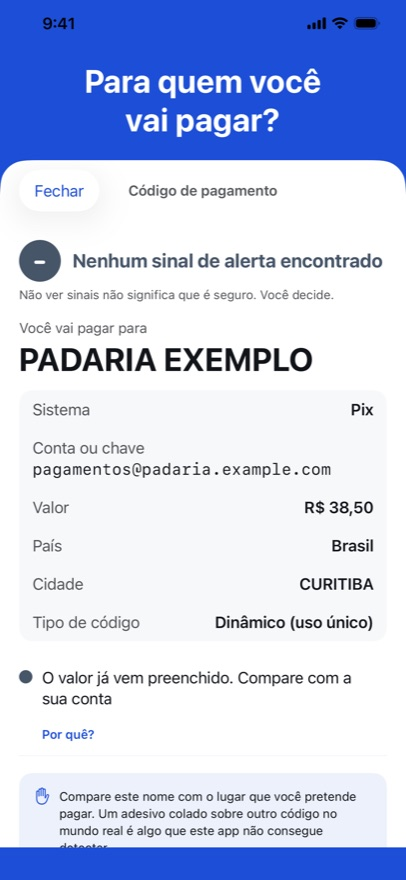
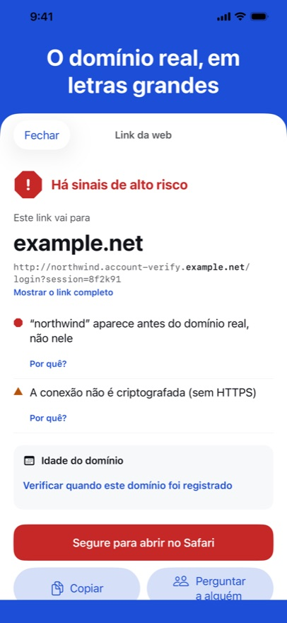

O QR Trust Scanner mostra aonde um código QR ou um link leva antes de você tocar: o domínio real em destaque, o que merece um segundo olhar e — em um código de pagamento — quem recebe o dinheiro. Ele nunca abre nada sozinho, e tudo é verificado no seu iPhone.



O domínio real, em destaque
Um link pode colocar qualquer palavra conhecida na frente do endereço de outra pessoa. O app mostra primeiro o domínio real.
Para quem você vai pagar?
Em códigos QR de pagamento no padrão EMVCo usados no Vietnã, no Brasil, na Indonésia e na Malásia: o recebedor, o valor e se o valor de verificação do código confere.
Sinais, não vereditos
Cada sinal é uma frase simples com um “Por quê?”. Três níveis, e a decisão é sua.
Em breve na App Store
Dados abertos que usamos
- Lista de alertas: PhishDestroy “destroylist” (github.com/phishdestroy/destroylist), licença MIT, © 2019 PhishDestroy.
- Public Suffix List (publicsuffix.org), Mozilla Public License 2.0.
- IANA: a lista de terminações de domínio da zona raiz e o registro de bootstrap RDAP.